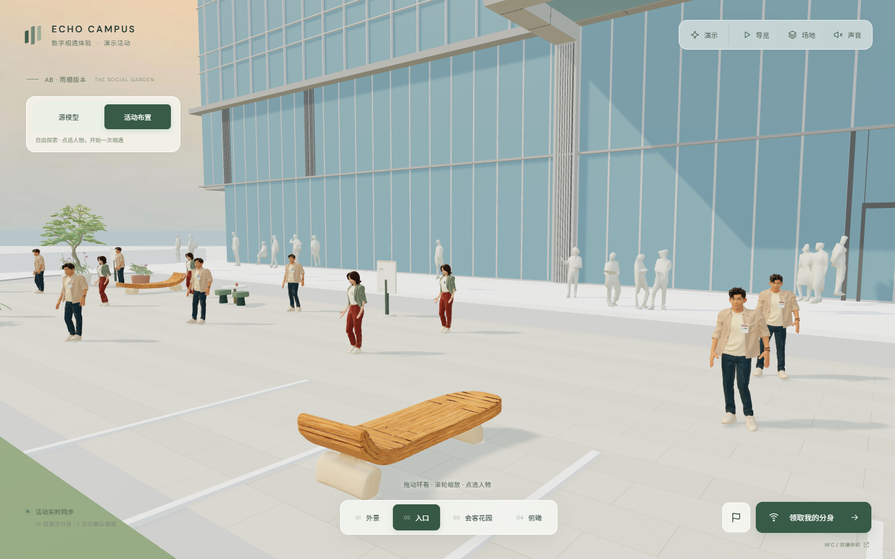
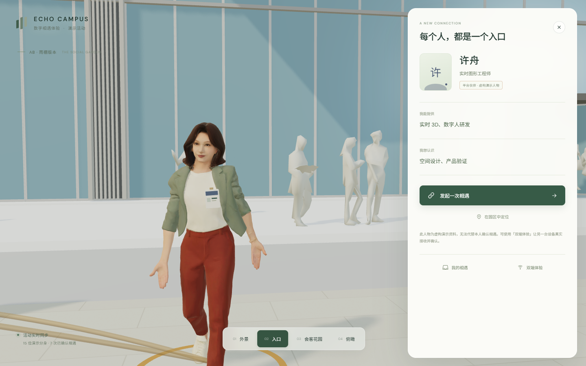
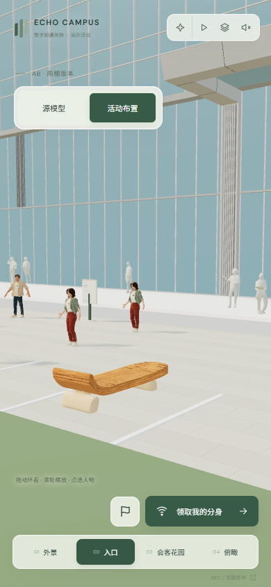
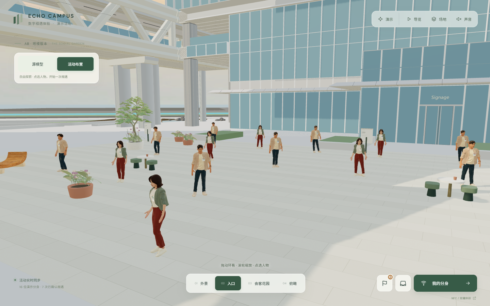

建筑保留，体验叠加
使用提供的场地模型，保留建筑形态与尺度；切回「源模型」即可对照。活动家具、植物、人物和点位独立布置。
A GARDEN FOR EVERY ENCOUNTER
熟悉的建筑，种植与座椅围合的会客花园，还有可以点选、认识与交流的数字分身。把活动现场延展成一处可以共同进入的线上空间。

当前版本实际浏览器画面 · T6 雨棚版本的活动布置，家具与植物为体验设计。
使用提供的场地模型，保留建筑形态与尺度；切回「源模型」即可对照。活动家具、植物、人物和点位独立布置。
当前提供两套共享的生成角色形象，配有待机、行走与挥手动作。它们是风格化模板，并非每位嘉宾的真实面容复刻。
曲木座椅、花境、树木与石材铺装组成交流区域；从人物名片、活动点位和双端体验开始互动。
HOW TO EXPERIENCE

点选人物，查看公开资料与交流意向。

右上「场地」选择真实模型；左侧「源模型 / 活动布置」对照建筑与活动效果。
底部选择「外景、入口、会客花园、俯瞰」；拖动环看，滚轮缩放，手机可触摸浏览。
了解对方能提供什么、想认识什么；领取自己的分身后，可以发起相遇。
点击右下按钮，填写公开资料并确认；联系方式可选填，并由本人决定是否展示。
点选场地中的点位，或点击右下旗帜进入「活动任务与积分」；领取后可体验网页打卡。
打开「NFC / 双端体验」，两位访客分别加入、发起与确认相遇，大屏可同步展示连接。
BUILT AROUND YOUR EVENT

三栋塔楼版本 · 与 T6 雨棚、C 地块商业裙房独立切换；AB 内部地块对应仍需场地方确认。